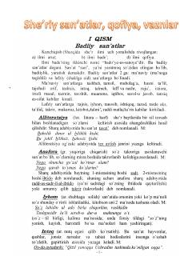

SSMumtoz adabiyotdagi badiiy san'atlar, qofiya va vaznlar haqida nazariy qo'llanma.
Ushbu qo'llanma mumtoz adabiyotdagi badiiy san'atlar, qofiya va vaznlar tizimini tushuntirib beradi. Unda alliteratsiya, anafora, istiora, iqtibos va laff-u nashr kabi ko'plab she'riy san'atlarning nazariy asoslari va misollari keltirilgan.